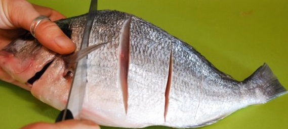
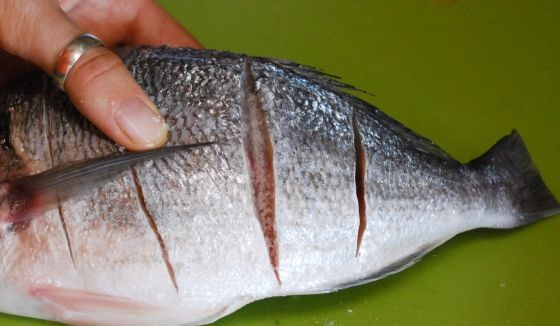
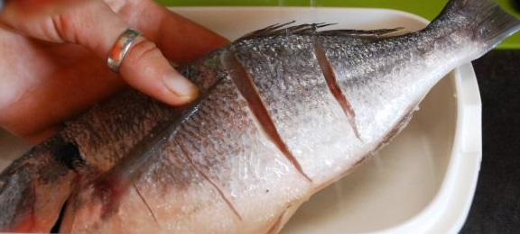
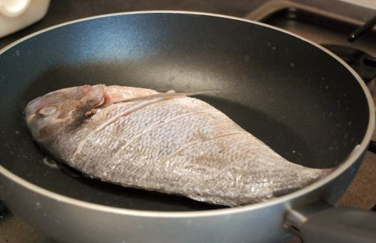
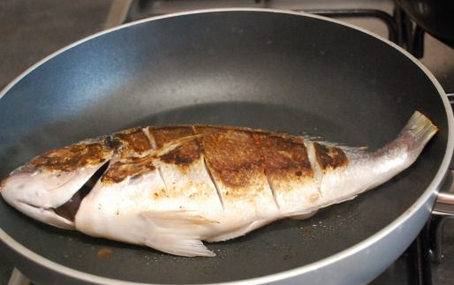

INGREDIENTES
PASOS PARA PREPARAR DORADA ALA PLANCHA
Tener el pescado limpio y cortar en tres partes en formas diagonales, con cortes profundos
llenar las entiduras con sal,frotanto tambien en la parte interior del pescado
Coloca la dorada en un molde o envase y exprime los limones para bañar con el zumo toda la pieza. Procura que el jugo caiga bien por las hendiduras y todo el resto del pescado. Reserva unos 10-15 minutos para que la carne tome sabor
Pasado este tiempo, calienta una sartén antihaderente a fuego moderado y coloca la dorada.Deja unos 5-7 minutos hasta que el lado que esta al fuego quede bien marcado.
Dale la vuelta al pescado con mucho cuidado, para que no se rompa, tapa la sartén y continua con la cocción por unos 10-12 minutos, hasta que la dorada a la plancha esté bien hecha.
